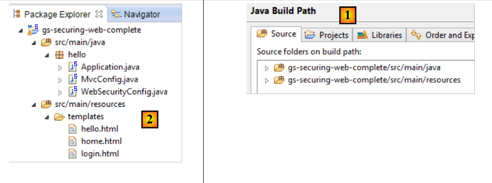
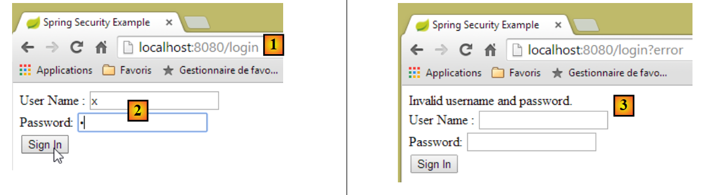
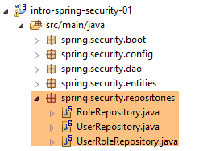
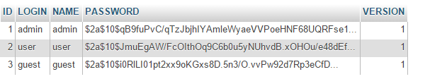
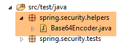
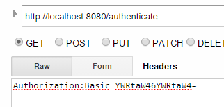
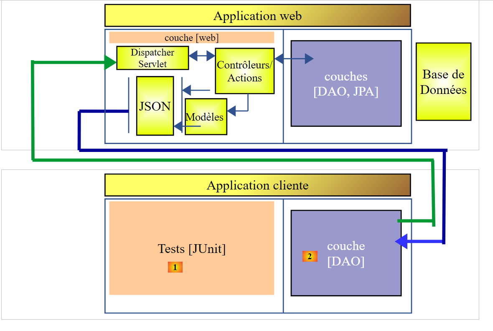

16. [Cours]: De toegang tot een webservice beveiligen met Spring Security
Sleutelwoorden: meerlaagse architectuur, Spring, afhankelijkheidsinjectie, webservice / beveiligde jSON, client / server
16.1. Support
 |  |
De projecten voor dit hoofdstuk zijn te vinden in de map [support / chap-16]. Het script SQL wordt gebruikt om de database te genereren die nodig is voor de tests.
16.2. De rol van Spring Security in een webapplicatie
Laten we Spring Security in de context van de ontwikkeling van een webapplicatie plaatsen. Meestal wordt deze gebouwd op basis van een meerlaagse architectuur, zoals de volgende:
 |
- de laag [Spring Security] verleent alleen geautoriseerde gebruikers toegang tot de laag [web].
16.3. Een tutorial over Spring Security
We gaan opnieuw een Spring-handleiding importeren door de onderstaande stappen 1 tot en met 3 te volgen:
 |
 |
Het project bestaat uit de volgende onderdelen:
- in de map [templates] bevinden zich de pagina's HTML van het project;
- [Application]: is de uitvoerbare klasse van het project;
- [MvcConfig]: is de configuratieklasse van Spring MVC;
- [WebSecurityConfig]: is de configuratieklasse voor Spring Security;
16.3.1. Maven-configuratie
Het project [3] is een Maven-project. Laten we het bestand [pom.xml] bekijken om de afhankelijkheden te zien:
<?xml version="1.0" encoding="UTF-8"?>
<project xmlns="http://maven.apache.org/POM/4.0.0" xmlns:xsi="http://www.w3.org/2001/XMLSchema-instance"
xsi:schemaLocation="http://maven.apache.org/POM/4.0.0 http://maven.apache.org/xsd/maven-4.0.0.xsd">
<modelVersion>4.0.0</modelVersion>
<groupId>org.springframework</groupId>
<artifactId>gs-securing-web</artifactId>
<version>0.1.0</version>
<parent>
<groupId>org.springframework.boot</groupId>
<artifactId>spring-boot-starter-parent</artifactId>
<version>1.2.3.RELEASE</version>
</parent>
<dependencies>
<dependency>
<groupId>org.springframework.boot</groupId>
<artifactId>spring-boot-starter-thymeleaf</artifactId>
</dependency>
<!-- tag::security[] -->
<dependency>
<groupId>org.springframework.boot</groupId>
<artifactId>spring-boot-starter-security</artifactId>
</dependency>
<!-- end::security[] -->
</dependencies>
<properties>
<start-class>hello.Application</start-class>
</properties>
<build>
<plugins>
<plugin>
<groupId>org.springframework.boot</groupId>
<artifactId>spring-boot-maven-plugin</artifactId>
</plugin>
</plugins>
</build>
</project>
- regels 10-14: het project is een Spring Boot-project;
- regels 17-20: afhankelijkheid van het [Thymeleaf]-framework;
- regels 22-25: afhankelijkheid van het Spring Security-framework;
16.3.2. De Thymeleaf-weergaven
 |
De weergave [home.html] ziet er als volgt uit:
 |
<!DOCTYPE html>
<html xmlns="http://www.w3.org/1999/xhtml"
xmlns:th="http://www.thymeleaf.org"
xmlns:sec="http://www.thymeleaf.org/thymeleaf-extras-springsecurity3">
<head>
<title>Spring Security Example</title>
</head>
<body>
<h1>Welcome!</h1>
<p>
Click <a th:href="@{/hello}">here</a> to see a greeting.
</p>
</body>
</html>
- regel 12: het attribuut [th:href="@{/hello}"] genereert het attribuut [href] van de tag [<a>]. De waarde [@{/hello}] genereert het pad [<context>/hello], waarbij [context] de context van de webapplicatie is;
De gegenereerde code HTML is als volgt:
<!DOCTYPE html>
<html xmlns="http://www.w3.org/1999/xhtml" xmlns:sec="http://www.thymeleaf.org/thymeleaf-extras-springsecurity3">
<head>
<title>Spring Security Example</title>
</head>
<body>
<h1>Welcome!</h1>
<p>
Click
<a href="/hello">here</a>
to see a greeting.
</p>
</body>
</html>
De weergave [hello.html] is als volgt:
 |
<!DOCTYPE html>
<html xmlns="http://www.w3.org/1999/xhtml"
xmlns:th="http://www.thymeleaf.org"
xmlns:sec="http://www.thymeleaf.org/thymeleaf-extras-springsecurity3">
<head>
<title>Hello World!</title>
</head>
<body>
<h1 th:inline="text">Hello [[${#httpServletRequest.remoteUser}]]!</h1>
<form th:action="@{/logout}" method="post">
<input type="submit" value="Sign Out" />
</form>
</body>
</html>
- regel 9: Het attribuut [th:inline="text"] genereert de tekst van de tag [<h1>]. Deze tekst bevat een $-uitdrukking die moet worden geëvalueerd. Het element [[${#httpServletRequest.remoteUser}]] is de waarde van het attribuut [RemoteUser] van de huidige aanvraag HTTP. Dit is de naam van de aangemelde gebruiker;
- regel 10: een formulier HTML. Het attribuut [th:action="@{/logout}"] genereert het attribuut [action] van de tag [form]. De waarde [@{/logout}] genereert het pad [<context>/logout], waarbij [context] de context van de webapplicatie is;
De gegenereerde code HTML is als volgt:
<!DOCTYPE html>
<html xmlns="http://www.w3.org/1999/xhtml" xmlns:sec="http://www.thymeleaf.org/thymeleaf-extras-springsecurity3">
<head>
<title>Hello World!</title>
</head>
<body>
<h1>Hello user!</h1>
<form method="post" action="/logout">
<input type="submit" value="Sign Out" />
<input type="hidden" name="_csrf" value="b152e5b9-d1a4-4492-b89d-b733fe521c91" />
</form>
</body>
</html>
- regel 8: de vertaling van Hello [[${#httpServletRequest.remoteUser}]]!;
- regel 9: de vertaling van @{/logout};
- regel 11: een verborgen veld met de naam (attribuut name) _csrf;
De weergave [login.html] ziet er als volgt uit:
 |
<!DOCTYPE html>
<html xmlns="http://www.w3.org/1999/xhtml"
xmlns:th="http://www.thymeleaf.org"
xmlns:sec="http://www.thymeleaf.org/thymeleaf-extras-springsecurity3">
<head>
<title>Spring Security Example</title>
</head>
<body>
<div th:if="${param.error}">Invalid username and password.</div>
<div th:if="${param.logout}">You have been logged out.</div>
<form th:action="@{/login}" method="post">
<div>
<label> User Name : <input type="text" name="username" />
</label>
</div>
<div>
<label> Password: <input type="password" name="password" />
</label>
</div>
<div>
<input type="submit" value="Sign In" />
</div>
</form>
</body>
</html>
- regel 9: het attribuut [th:if="${param.error}"] zorgt ervoor dat de tag <div> alleen wordt gegenereerd als de URL die de inlogpagina weergeeft, de parameter [error] (http://context/login?error) bevat;
- regel 10: het attribuut [th:if="${param.logout}"] zorgt ervoor dat de tag <div> alleen wordt gegenereerd als de URL, die de inlogpagina weergeeft, de parameter [logout] bevat (http://context/login?logout);
- regels 11-23: een formulier HTML;
- regel 11: het formulier wordt verzonden naar de URL [<context>/login], waarbij <context> de context van de webapplicatie is;
- regel 13: een invoerveld met de naam [username];
- regel 17: een invoerveld met de naam [password];
De gegenereerde code HTML is als volgt:
<!DOCTYPE html>
<html xmlns="http://www.w3.org/1999/xhtml" xmlns:sec="http://www.thymeleaf.org/thymeleaf-extras-springsecurity3">
<head>
<title>Spring Security Example </title>
</head>
<body>
<div>
You have been logged out.
</div>
<form method="post" action="/login">
<div>
<label>
User Name :
<input type="text" name="username" />
</label>
</div>
<div>
<label>
Password:
<input type="password" name="password" />
</label>
</div>
<div>
<input type="submit" value="Sign In" />
</div>
<input type="hidden" name="_csrf" value="ef809b0a-88b4-4db9-bc53-342216b77632" />
</form>
</body>
</html>
Op regel 28 is te zien dat Thymeleaf een verborgen veld met de naam [_csrf] heeft toegevoegd.
16.3.3. Spring-configuratie MVC
 |
De klasse [MvcConfig] configureert het Spring-framework MVC:
package hello;
import org.springframework.context.annotation.Configuration;
import org.springframework.web.servlet.config.annotation.ViewControllerRegistry;
import org.springframework.web.servlet.config.annotation.WebMvcConfigurerAdapter;
@Configuration
public class MvcConfig extends WebMvcConfigurerAdapter {
@Override
public void addViewControllers(ViewControllerRegistry registry) {
registry.addViewController("/home").setViewName("home");
registry.addViewController("/").setViewName("home");
registry.addViewController("/hello").setViewName("hello");
registry.addViewController("/login").setViewName("login");
}
}
- regel 7: de annotatie [@Configuration] maakt van de klasse [MvcConfig] een configuratieklasse;
- regel 8: de klasse [MvcConfig] breidt de klasse [WebMvcConfigurerAdapter] uit om bepaalde methoden ervan opnieuw te definiëren;
- regel 10: herdefinitie van een methode van de bovenliggende klasse;
- regels 11-16: met de methode [addViewControllers] kunnen URL'en worden gekoppeld aan weergaven HTML. De volgende koppelingen worden hier gemaakt:
weergave | |
/templates/home.html | |
/templates/hello.html | |
/templates/login.html |
De extensie [html] en de map [templates] zijn de standaardwaarden die door Thymeleaf worden gebruikt. Deze kunnen via de configuratie worden gewijzigd. De map [templates] moet zich in de root van het classpath van het project bevinden:
 |
Boven [1] zijn de mappen [java] en [resources] beide bronmappen (source folders). Dit betekent dat hun inhoud zich in de root van het classpath van het project bevindt. Dus in [2] bevinden de mappen [hello] en [templates] zich in de root van het classpath.
16.3.4. Configuratie van Spring Security
 |
De klasse [WebSecurityConfig] configureert het Spring Security-framework:
package hello;
import org.springframework.context.annotation.Configuration;
import org.springframework.security.config.annotation.authentication.builders.AuthenticationManagerBuilder;
import org.springframework.security.config.annotation.web.builders.HttpSecurity;
import org.springframework.security.config.annotation.web.configuration.WebSecurityConfigurerAdapter;
import org.springframework.security.config.annotation.web.servlet.configuration.EnableWebMvcSecurity;
@Configuration
@EnableWebMvcSecurity
public class WebSecurityConfig extends WebSecurityConfigurerAdapter {
@Override
protected void configure(HttpSecurity http) throws Exception {
http.authorizeRequests().antMatchers("/", "/home").permitAll().anyRequest().authenticated();
http.formLogin().loginPage("/login").permitAll().and().logout().permitAll();
}
@Override
protected void configure(AuthenticationManagerBuilder auth) throws Exception {
auth.inMemoryAuthentication().withUser("user").password("password").roles("USER");
}
}
- regel 9: de annotatie [@Configuration] maakt van de klasse [WebSecurityConfig] een configuratieklasse;
- regel 10: de annotatie [@EnableWebSecurity] maakt van de klasse [WebSecurityConfig] een Spring Security-configuratieklasse;
- regel 11: de klasse [WebSecurity] breidt de klasse [WebSecurityConfigurerAdapter] uit om bepaalde methoden ervan opnieuw te definiëren;
- regel 12: herdefinitie van een methode van de bovenliggende klasse;
- regels 13-16: de methode [configure(HttpSecurity http)] wordt opnieuw gedefinieerd om de toegangsrechten voor de verschillende URL van de applicatie vast te leggen;
- regel 14: met de methode [http.authorizeRequests()] kunnen URL'en aan toegangsrechten worden gekoppeld. Hierin worden de volgende koppelingen gemaakt:
regel | code | |
toegang zonder authenticatie | | |
alleen toegang na authenticatie |
- regel 15: definieert de authenticatiemethode. De authenticatie gebeurt via een formulier URL [/login] dat voor iedereen toegankelijk is [http.formLogin().loginPage("/login").permitAll()]. Het uitloggen (logout) is eveneens voor iedereen toegankelijk;
- regels 19-21: herdefiniëren de methode [configure(AuthenticationManagerBuilder auth)] die de gebruikers beheert;
- regel 20: de authenticatie vindt plaats met ‘vast’ gedefinieerde gebruikers [auth.inMemoryAuthentication()]. Een gebruiker wordt hier gedefinieerd met de login [user], het wachtwoord [password] en de rol [USER]. Aan gebruikers met dezelfde rol kunnen dezelfde rechten worden toegekend;
16.3.5. Uitvoerbare klasse
 |
De klasse [Application] is als volgt:
package hello;
import org.springframework.boot.autoconfigure.EnableAutoConfiguration;
import org.springframework.boot.SpringApplication;
import org.springframework.context.annotation.ComponentScan;
import org.springframework.context.annotation.Configuration;
@EnableAutoConfiguration
@Configuration
@ComponentScan
public class Application {
public static void main(String[] args) throws Throwable {
SpringApplication.run(Application.class, args);
}
}
- regel 8: de annotatie [@EnableAutoConfiguration] vraagt Spring Boot (regel 3) om de configuratie uit te voeren die de ontwikkelaar niet expliciet heeft uitgevoerd;
- regel 9: maakt van de klasse [Application] een Spring-configuratieklasse;
- regel 10: vraagt om de map van de klasse [Application] te scannen op zoek naar Spring-componenten. De twee klassen [MvcConfig] en [WebSecurityConfig] worden op deze manier gedetecteerd omdat ze de annotatie [@Configuration] hebben;
- regel 13: de methode [main] van de uitvoerbare klasse;
- regel 14: de statische methode [SpringApplication.run] wordt uitgevoerd met de configuratieklasse [Application] als parameter. We zijn dit proces al eerder tegengekomen en weten dat de Tomcat-server die in de Maven-afhankelijkheden van het project is opgenomen, zal worden gestart en dat het project daarop zal worden geïmplementeerd. We hebben gezien dat vier URL-bestanden werden beheerd door [/, /home, /login, /hello] en dat sommige werden beschermd door toegangsrechten.
16.3.6. Testen van de applicatie
Laten we beginnen met het opvragen van de URL [/], een van de vier geaccepteerde URL-bestanden. Deze is gekoppeld aan de weergave [/templates/home.html]:
 |
De aangevraagde URL [/] is voor iedereen toegankelijk. Daarom hebben we deze verkregen. De link [here] is als volgt:
De URL [/hello] wordt opgevraagd wanneer je op de link klikt. Deze is beveiligd:
regel | code | |
toegang zonder authenticatie | | |
alleen toegang na authenticatie |
U moet geauthenticeerd zijn om deze te verkrijgen. Spring Security zal de browser van de klant dan doorverwijzen naar de authenticatiepagina. Volgens de getoonde configuratie is dit de pagina URL [/login]. Deze is voor iedereen toegankelijk:
http.formLogin().loginPage("/login").permitAll().and().logout().permitAll();
We krijgen dus [1]:
 |
De broncode van de verkregen pagina is als volgt:
- op regel 7 verschijnt een verborgen veld dat niet in de oorspronkelijke pagina [login.html] voorkomt. Dit is door Thymeleaf toegevoegd. Deze code, genaamd CSRF (Cross Site Request Forgery), is bedoeld om een beveiligingslek te verhelpen. Dit token moet samen met de authenticatie naar Spring Security worden teruggestuurd, zodat deze wordt geaccepteerd;
We herinneren ons dat alleen de gebruiker user/password door Spring Security wordt herkend. Als we iets anders invoeren, bijvoorbeeld [2], krijgen we dezelfde pagina te zien met een foutmelding in [3]. Spring Security heeft de browser doorgestuurd naar de pagina URL [http://localhost:8080/login?error]. De aanwezigheid van de parameter [error] heeft ervoor gezorgd dat de tag werd weergegeven:
<div th:if="${param.error}">Invalid username and password.</div>
Laten we nu de verwachte waarden voor user/password invoeren: [4]:
 |
- in [4], we loggen in;
- in [5] leidt Spring Security ons om naar de URL [/hello], omdat dit de URL is die we opvroegen toen we werden doorgestuurd naar de inlogpagina. De identiteit van de gebruiker werd weergegeven in de volgende regel van [hello.html]:
De pagina [5] toont het volgende formulier:
<form th:action="@{/logout}" method="post">
<input type="submit" value="Sign Out" />
</form>
Wanneer u op de knop [Sign Out] klikt, wordt er een POST uitgevoerd op de URL [/logout]. Deze is, net als de URL en [/login], voor iedereen toegankelijk:
http.formLogin().loginPage("/login").permitAll().and().logout().permitAll();
In onze koppeling URL / views hebben we niets gedefinieerd voor de URL en [/logout]. Wat gaat er gebeuren? Laten we het eens proberen:
 |
- in [6] klikken we op de knop [Sign Out];
- in [7] zien we dat we zijn doorgestuurd naar de URL [http://localhost:8080/login?logout]. Het is Spring Security die om deze omleiding heeft gevraagd. Door de aanwezigheid van de parameter [logout] in URL werd de volgende regel in de weergave getoond:
<div th:if="${param.logout}">You have been logged out.</div>
16.3.7. Conclusie
In het vorige voorbeeld hadden we eerst de webapplicatie kunnen schrijven en deze daarna kunnen beveiligen. Spring Security is niet ingrijpend. Het is mogelijk om de beveiliging van een reeds geschreven webapplicatie in te stellen. Daarnaast hebben we het volgende ontdekt:
- het is mogelijk om een authenticatiepagina te definiëren;
- de authenticatie moet vergezeld gaan van het door Spring Security verstrekte token CSRF;
- als de authenticatie mislukt, wordt men doorgestuurd naar de authenticatiepagina, met bovendien een parameter ‘error’ in het token URL;
- als de authenticatie slaagt, wordt men doorgestuurd naar de pagina die werd opgevraagd op het moment dat de authenticatie plaatsvond. Als de authenticatiepagina rechtstreeks wordt opgevraagd zonder tussenpagina, dan leidt Spring Security ons om naar de URL [/] (dit geval is niet behandeld);
- je meldt je af door de pagina URL [/logout] op te vragen met een POST. Spring Security leidt ons vervolgens door naar de authenticatiepagina met de parameter logout in de URL;
Al deze conclusies zijn gebaseerd op het standaardgedrag van Spring Security. Dit gedrag kan via de configuratie worden gewijzigd door bepaalde methoden van de klasse [WebSecurityConfigurerAdapter] te herdefiniëren.
De vorige tutorial zal ons verderop weinig helpen. We gaan namelijk gebruikmaken van:
- een database om gebruikers, hun wachtwoorden en hun rollen op te slaan;
- authenticatie via headers HTTP;
Er zijn vrij weinig tutorials te vinden voor wat we hier willen doen. De oplossing die wordt voorgesteld, is een samenvoeging van code die hier en daar is gevonden.
16.4. Beveiliging instellen voor de webservice / JSON van de producten
16.4.1. De database
De database [dbintrospringdata] wordt aangepast om rekening te houden met gebruikers, hun wachtwoorden en hun rollen. Er komen drie nieuwe tabellen bij:

Tabel [USERS]: de gebruikers
- ID: primaire sleutel;
- VERSION: versiekolom van de rij;
- IDENTITY: een beschrijvende identiteit van de gebruiker;
- LOGIN: de gebruikersnaam van de gebruiker;
- PASSWORD: het wachtwoord van de gebruiker;
In de tabel USERS worden wachtwoorden niet in leesbare vorm opgeslagen:
 |
Het algoritme dat de wachtwoorden versleutelt, is het algoritme BCRYPT.
Tabel [ROLES]: de rollen
- ID: primaire sleutel;
- VERSION: versiekolom van de rij;
- NAME: rolnaam. Standaard verwacht Spring Security namen in de vorm ROLE_XX, bijvoorbeeld ROLE_ADMIN of ROLE_GUEST;
 |
Tabel [USERS_ROLES]: koppelingstabel USERS / ROLES
Een gebruiker kan meerdere rollen hebben, en een rol kan meerdere gebruikers omvatten. Er is sprake van een veel-op-veel-relatie, die wordt weergegeven door de tabel [USERS_ROLES].
- ID: primaire sleutel;
- VERSION: versiekolom van de rij;
- USER_ID: gebruikers-ID;
- ROLE_ID: rol-ID;
 |
16.4.2. Het Eclipse-project
We maken het volgende Eclipse-project aan:
1  |
- in [1]: het nieuwe project met de volgende pakketten:
- [spring.security.entities]: bevat de entiteiten JPA die overeenkomen met de drie nieuwe tabellen in de database;
- [spring.security.repositories]: bevat de [repositories] van Spring Data die bij de drie nieuwe tabellen horen;
- [spring.security.dao]: bevat een service die is gebaseerd op de [repositories];
- [spring.security.config]: bevat de projectconfiguratie, met name die voor beveiligde toegang tot de webservice;
- [spring.security.boot]: bevat de startklasse van de beveiligde webservice;
16.4.3. De Maven-configuratie
Het nieuwe project is een Maven-project dat is geconfigureerd via het volgende bestand [pom.xml]:
<project xmlns="http://maven.apache.org/POM/4.0.0" xmlns:xsi="http://www.w3.org/2001/XMLSchema-instance"
xsi:schemaLocation="http://maven.apache.org/POM/4.0.0 http://maven.apache.org/xsd/maven-4.0.0.xsd">
<modelVersion>4.0.0</modelVersion>
<groupId>istia.st.spring.security</groupId>
<artifactId>intro-spring-security-server-01</artifactId>
<version>0.0.1-SNAPSHOT</version>
<name>intro-spring-security-server-01</name>
<description>démo spring security</description>
<properties>
<project.build.sourceEncoding>UTF-8</project.build.sourceEncoding>
<java.version>1.8</java.version>
</properties>
<parent>
<groupId>org.springframework.boot</groupId>
<artifactId>spring-boot-starter-parent</artifactId>
<version>1.2.7.RELEASE</version>
</parent>
<dependencies>
<dependency>
<groupId>istia.st.webjson</groupId>
<artifactId>intro-server-webjson-01</artifactId>
<version>0.0.1-SNAPSHOT</version>
</dependency>
<!-- Spring Security -->
<dependency>
<groupId>org.springframework.boot</groupId>
<artifactId>spring-boot-starter-security</artifactId>
</dependency>
<!-- Spring-logs -->
<dependency>
<groupId>org.springframework.boot</groupId>
<artifactId>spring-boot-starter-logging</artifactId>
</dependency>
<!-- Spring Boot -->
<dependency>
<groupId>org.springframework.boot</groupId>
<artifactId>spring-boot</artifactId>
</dependency>
<!-- Spring Boot Test -->
<dependency>
<groupId>org.springframework.boot</groupId>
<artifactId>spring-boot-starter-test</artifactId>
<scope>test</scope>
</dependency>
</dependencies>
<!-- plugins -->
<build>
<plugins>
<plugin>
<artifactId>maven-assembly-plugin</artifactId>
<configuration>
<descriptorRefs>
<descriptorRef>jar-with-dependencies</descriptorRef>
</descriptorRefs>
</configuration>
</plugin>
<plugin>
<groupId>org.apache.maven.plugins</groupId>
<artifactId>maven-surefire-plugin</artifactId>
<version>2.18.1</version>
</plugin>
</plugins>
</build>
</project>
- regels 23-27: we nemen de bestaande instellingen over met het archief van de onderzochte webservice / json;
- regels 29-32: de afhankelijkheid die de Spring Security-klassen aanlevert;
- regels 34-37: de logboekbibliotheek;
- regels 39-42: de bibliotheek waarmee Spring Boot-annotaties kunnen worden gebruikt;
- regels 44-48: de bibliotheek die nodig is voor het testen;
16.4.4. De nieuwe entiteiten [JPA]
 |
De laag JPA definieert drie nieuwe entiteiten:
 |
De klasse [User] is de afspiegeling van de tabel [USERS]:
package spring.security.entities;
import javax.persistence.Column;
import javax.persistence.Entity;
import javax.persistence.Table;
import spring.data.entities.AbstractEntity;
@Entity
@Table(name = "USERS")
public class User extends AbstractEntity {
// eigenschappen
@Column(name = "NAME")
private String name;
@Column(name = "LOGIN")
private String login;
@Column(name = "PASSWORD")
private String password;
// constructor
public User() {
}
public User(String name, String login, String password) {
this.name = name;
this.login = login;
this.password = password;
}
// getters en setters
...
}
- regel 11: de klasse is een uitbreiding van de klasse [AbstractEntity] die al voor de andere entiteiten wordt gebruikt;
De klasse [Role] is de weergave van de tabel [ROLES]:
package spring.security.entities;
import javax.persistence.Column;
import javax.persistence.Entity;
import javax.persistence.Table;
import spring.data.entities.AbstractEntity;
@Entity
@Table(name = "ROLES")
public class Role extends AbstractEntity {
// eigenschappen
@Column(name="NAME")
private String name;
// constructors
public Role() {
}
public Role(String name) {
this.name = name;
}
// getters en setters
public String getName() {
return name;
}
public void setName(String name) {
this.name = name;
}
}
De klasse [UserRole] is de weergave van de tabel [USERS_ROLES]:
package spring.security.entities;
import javax.persistence.Column;
import javax.persistence.Entity;
import javax.persistence.JoinColumn;
import javax.persistence.ManyToOne;
import javax.persistence.Table;
import spring.data.entities.AbstractEntity;
@Entity
@Table(name = "USERS_ROLES")
public class UserRole extends AbstractEntity {
// vreemde sleutels
@Column(name = "USER_ID", insertable = false, updatable = false)
private Long userId;
@Column(name = "ROLE_ID", insertable = false, updatable = false)
private Long roleId;
// een UserRole verwijst naar een User
@ManyToOne
@JoinColumn(name = "USER_ID")
private User user;
// een UserRole verwijst naar een rol
@ManyToOne
@JoinColumn(name = "ROLE_ID")
private Role role;
// constructors
public UserRole() {
}
public UserRole(User user, Role role) {
this.user = user;
this.role = role;
}
// getters en setters
...
}
- regels 22-24: geven de externe sleutel weer van de tabel [USERS_ROLES] naar de tabel [USERS];
- regels 27-29: geven de vreemde sleutel weer van de tabel [USERS_ROLES] naar de tabel [ROLES];
16.4.5. De [repositories]
 |
Elk van de voorgaande entiteiten JPA wordt beheerd door een [repository] Spring Data:
 |
De interface [UserRepository] regelt de toegang tot de entiteiten [User]:
package spring.security.repositories;
import org.springframework.data.jpa.repository.Query;
import org.springframework.data.repository.CrudRepository;
import spring.security.entities.Role;
import spring.security.entities.User;
public interface UserRepository extends CrudRepository<User, Long> {
// lijst met rollen van een gebruiker geïdentificeerd aan de hand van zijn id
@Query("select ur.role from UserRole ur where ur.user.id=?1")
Iterable<Role> getRoles(long id);
// lijst met rollen van een gebruiker geïdentificeerd aan de hand van zijn unieke login
@Query("select ur.role from UserRole ur where ur.user.login=?1 and ur.user.password=?2")
Iterable<Role> getRoles(String login, String password);
// zoeken naar een gebruiker op basis van zijn login
User findUserByLogin(String login);
}
- regel 9: de interface [UserRepository] breidt de interface [CrudRepository] van Spring Data uit (regel 4);
- regels 12-13: met de methode [getRoles(User user)] kunnen alle rollen worden opgehaald van een gebruiker die is geïdentificeerd aan de hand van zijn [id]
- regels 16-17: idem, maar dan voor een gebruiker die wordt geïdentificeerd aan de hand van zijn login en wachtwoord;
- regel 20: om een gebruiker op te zoeken via zijn gebruikersnaam;
De interface [RoleRepository] beheert de toegang tot de entiteiten [Role]:
package spring.security.repositories;
import org.springframework.data.repository.CrudRepository;
import spring.security.entities.Role;
public interface RoleRepository extends CrudRepository<Role, Long> {
// zoeken naar een rol op naam
Role findRoleByName(String name);
}
- regel 7: de interface [RoleRepository] breidt de interface [CrudRepository] uit;
- regel 10: men kan een rol op naam zoeken;
De interface [UserRoleRepository] beheert de toegang tot de entiteiten [UserRole]:
package spring.security.repositories;
import org.springframework.data.repository.CrudRepository;
import spring.security.entities.UserRole;
public interface UserRoleRepository extends CrudRepository<UserRole, Long> {
}
- regel 5: de interface [UserRoleRepository] breidt alleen de interface [CrudRepository] uit zonder er nieuwe methoden aan toe te voegen;
16.4.6. De klassen voor het beheer van gebruikers en rollen
 |
 |
Spring Security vereist het aanmaken van een klasse die de volgende interface [UsersDetail] implementeert:
 |
Deze interface wordt hier geïmplementeerd door de klasse [AppUserDetails]:
package spring.security.dao;
import java.util.ArrayList;
import java.util.Collection;
import org.springframework.security.core.GrantedAuthority;
import org.springframework.security.core.authority.SimpleGrantedAuthority;
import org.springframework.security.core.userdetails.UserDetails;
import spring.security.entities.Role;
import spring.security.entities.User;
import spring.security.repositories.UserRepository;
public class AppUserDetails implements UserDetails {
private static final long serialVersionUID = 1L;
// eigenschappen
private User user;
private UserRepository userRepository;
// constructors
public AppUserDetails() {
}
public AppUserDetails(User user, UserRepository userRepository) {
this.user = user;
this.userRepository = userRepository;
}
// -------------------------interface
@Override
public Collection<? extends GrantedAuthority> getAuthorities() {
Collection<GrantedAuthority> authorities = new ArrayList<>();
for (Role role : userRepository.getRoles(user.getId())) {
authorities.add(new SimpleGrantedAuthority(role.getName()));
}
return authorities;
}
@Override
public String getPassword() {
return user.getPassword();
}
@Override
public String getUsername() {
return user.getLogin();
}
@Override
public boolean isAccountNonExpired() {
return true;
}
@Override
public boolean isAccountNonLocked() {
return true;
}
@Override
public boolean isCredentialsNonExpired() {
return true;
}
@Override
public boolean isEnabled() {
return true;
}
// getters en setters
...
}
- regel 14: de klasse [AppUserDetails] implementeert de interface [UserDetails];
- regels 19-20: de klasse kapselt een gebruiker in (regel 19) en de repository waarmee de details van deze gebruiker kunnen worden opgehaald (regel 20);
- regels 26-29: de constructor die de klasse instantiëert met een gebruiker en diens repository;
- regels 32-36: implementatie van de methode [getAuthorities] van de interface [UserDetails]. Deze methode moet een verzameling elementen van het type [GrantedAuthority] of een afgeleid type samenstellen. Hier gebruiken we het afgeleide type [SimpleGrantedAuthority] (regel 36), dat de naam van een van de rollen van de gebruiker uit regel 19 omvat;
- regels 35-37: de lijst met rollen van de gebruiker uit regel 19 wordt doorlopen om een lijst met elementen van het type [SimpleGrantedAuthority] samen te stellen;
- regels 42-44: implementeren de methode [getPassword] van de interface [UserDetails]. Het wachtwoord van de gebruiker uit regel 19 wordt weergegeven;
- regels 42-44: implementeren de methode [getUserName] van de interface [UserDetails]. De gebruikersnaam uit regel 19 wordt geretourneerd;
- regels 51-54: het account van de gebruiker verloopt nooit;
- regels 56-59: het account van de gebruiker wordt nooit geblokkeerd;
- regels 61-64: de inloggegevens van de gebruiker verlopen nooit;
- regels 66-69: het account van de gebruiker is altijd actief;
Spring Security vereist ook dat er een klasse bestaat die de interface [AppUserDetailsService] implementeert:
 |
Deze interface wordt geïmplementeerd door de volgende klasse [AppUserDetailsService]:
package spring.security.dao;
import org.springframework.beans.factory.annotation.Autowired;
import org.springframework.security.core.userdetails.UserDetails;
import org.springframework.security.core.userdetails.UserDetailsService;
import org.springframework.security.core.userdetails.UsernameNotFoundException;
import org.springframework.stereotype.Service;
import spring.security.entities.User;
import spring.security.repositories.UserRepository;
@Service
public class AppUserDetailsService implements UserDetailsService {
@Autowired
private UserRepository userRepository;
@Override
public UserDetails loadUserByUsername(String login) throws UsernameNotFoundException {
// de gebruiker zoeken op basis van zijn login
User user = userRepository.findUserByLogin(login);
// gevonden?
if (user == null) {
throw new UsernameNotFoundException(String.format("login [%s] inexistant", login));
}
// de gegevens van de gebruiker weergeven
return new AppUserDetails(user, userRepository);
}
}
- regel 12: de klasse wordt een Spring-component en is dus beschikbaar in de context;
- regels 15-16: de component [UserRepository] wordt hier geïnjecteerd;
- regels 19-28: implementatie van de methode [loadUserByUsername] van de interface [UserDetailsService] (regel 10). De parameter is de gebruikersnaam;
- regel 21: de gebruiker wordt opgezocht aan de hand van zijn gebruikersnaam;
- regels 23-25: als hij niet wordt gevonden, wordt er een uitzondering gegenereerd;
- regel 27: er wordt een object [AppUserDetails] aangemaakt en weergegeven. Dit is inderdaad van het type [UserDetails] (regel 19);
16.4.7. De configuratie van het project
 |
Het project bestaat uit twee klassen:
 |
De klasse [DaoConfig] configureert de laag [DAO] die door het nieuwe project wordt meegebracht:
package spring.security.config;
import org.springframework.context.annotation.Bean;
import org.springframework.context.annotation.ComponentScan;
import org.springframework.context.annotation.Import;
import org.springframework.data.jpa.repository.config.EnableJpaRepositories;
@EnableJpaRepositories(basePackages = { "spring.security.repositories" })
@ComponentScan(basePackages = { "spring.security.dao" })
@Import({ spring.data.config.DaoConfig.class })
public class DaoConfig {
// constanten
final static private String[] ENTITIES_PACKAGES = { "spring.data.entities", "spring.security.entities" };
@Bean
public String[] packagesToScan() {
return ENTITIES_PACKAGES;
}
}
- regel 10: de configuratieklasse [spring.data.config.DaoConfig] wordt geïmporteerd uit het project [intro-spring-data-01], dat de laag [DAO] voor producten en categorieën implementeert;
- regel 8: we geven de mappen van het huidige project aan die [repositories] Spring Data bevatten;
- regel 9: hier worden de mappen van het huidige project aangeduid die Spring-componenten bevatten met betrekking tot de laag [DAO];
- regel 14: hier worden de mappen aangeduid die JPA-entiteiten bevatten. Dit zijn de mappen van het project [intro-spring-data-01] en die van het beveiligde serverproject. Deze informatie vormt het onderwerp van de bean in de regels 16-19. Deze bean herdefinieert de gelijknamige bean van het project [intro-spring-data-01]:
final static private String[] ENTITIES_PACKAGES = { "spring.data.entities" };
// EntityManagerFactory
@Bean
public EntityManagerFactory entityManagerFactory(JpaVendorAdapter jpaVendorAdapter, DataSource dataSource) {
LocalContainerEntityManagerFactoryBean factory = new LocalContainerEntityManagerFactoryBean();
factory.setJpaVendorAdapter(jpaVendorAdapter);
factory.setPackagesToScan(packagesToScan());
factory.setDataSource(dataSource);
factory.afterPropertiesSet();
return factory.getObject();
}
@Bean
public String[] packagesToScan() {
return ENTITIES_PACKAGES;
}
In de laag [DAO] scant regel 8 de mappen die in regel 1 worden aangegeven. Vanwege de herdefinitie van de bean in de regels 14-17 in het beveiligde project (regels 16-19) zal regel 8 hierboven voortaan de mappen van ["spring.data.entities", "spring.security.entities"] scannen. Let op: de klasse die in regel 10 wordt geïmporteerd uit de klasse [spring.security.config.DaoConfig] moet de annotatie [@Configuration] bevatten, anders werkt het zojuist uitgelegde fenomeen niet.
De klasse [SecurityConfig] configureert de beveiligingsaspecten van het project. We zijn al eerder een configuratieklasse van Spring Security tegengekomen:
package hello;
import org.springframework.context.annotation.Configuration;
import org.springframework.security.config.annotation.authentication.builders.AuthenticationManagerBuilder;
import org.springframework.security.config.annotation.web.builders.HttpSecurity;
import org.springframework.security.config.annotation.web.configuration.WebSecurityConfigurerAdapter;
import org.springframework.security.config.annotation.web.servlet.configuration.EnableWebMvcSecurity;
@Configuration
@EnableWebMvcSecurity
public class WebSecurityConfig extends WebSecurityConfigurerAdapter {
@Override
protected void configure(HttpSecurity http) throws Exception {
http.authorizeRequests().antMatchers("/", "/home").permitAll().anyRequest().authenticated();
http.formLogin().loginPage("/login").permitAll().and().logout().permitAll();
}
@Override
protected void configure(AuthenticationManagerBuilder auth) throws Exception {
auth.inMemoryAuthentication().withUser("user").password("password").roles("USER");
}
}
We volgen dezelfde aanpak:
- regel 11: een klasse definiëren die de klasse [WebSecurityConfigurerAdapter] uitbreidt;
- regel 13: een methode [configure(HttpSecurity http)] definiëren die de toegangsrechten tot de verschillende URL van de webservice vastlegt;
- regel 19: een methode [configure(AuthenticationManagerBuilder auth)] definiëren die de gebruikers en hun rollen vastlegt;
De klasse [SecurityConfig] ziet er als volgt uit:
package spring.security.config;
import org.springframework.beans.factory.annotation.Autowired;
import org.springframework.context.annotation.ComponentScan;
import org.springframework.context.annotation.Import;
import org.springframework.http.HttpMethod;
import org.springframework.security.config.annotation.authentication.builders.AuthenticationManagerBuilder;
import org.springframework.security.config.annotation.web.builders.HttpSecurity;
import org.springframework.security.config.annotation.web.configuration.EnableWebSecurity;
import org.springframework.security.config.annotation.web.configuration.WebSecurityConfigurerAdapter;
import org.springframework.security.config.http.SessionCreationPolicy;
import org.springframework.security.crypto.bcrypt.BCryptPasswordEncoder;
import spring.security.dao.AppUserDetailsService;
@EnableWebSecurity
@ComponentScan(basePackages = { "spring.security.service" })
@Import({ spring.webjson.config.AppConfig.class, DaoConfig.class })
public class SecurityConfig extends WebSecurityConfigurerAdapter {
@Autowired
private AppUserDetailsService appUserDetailsService;
// beveiliging
private boolean activateSecurity = true;
@Override
protected void configure(AuthenticationManagerBuilder registry) throws Exception {
// de authenticatie wordt uitgevoerd door de bean [appUserDetailsService]
// het wachtwoord wordt versleuteld met het hash-algoritme BCrypt
registry.userDetailsService(appUserDetailsService).passwordEncoder(new BCryptPasswordEncoder());
}
@Override
protected void configure(HttpSecurity http) throws Exception {
// CSRF
http.csrf().disable();
// beveiligde applicatie?
if (activateSecurity) {
// het wachtwoord wordt verzonden via de header Authorization: Basic xxxx
http.httpBasic();
// de methode HTTP OPTIONS moet voor iedereen worden toegestaan
http.authorizeRequests() //
.antMatchers(HttpMethod.OPTIONS, "/", "/**").permitAll();
// alleen de rol ADMIN mag de applicatie gebruiken
http.authorizeRequests() //
.antMatchers("/", "/**") // alle URL
.hasRole("ADMIN");
// geen sessie
http.sessionManagement().sessionCreationPolicy(SessionCreationPolicy.STATELESS);
}
}
}
- regel 16: om de Spring Security-elementen te activeren;
- regel 17: we voegen de Spring-componenten van het pakket [spring.security.service] toe;
- regel 18: we importeren de beans van de zojuist besproken laag [DAO], evenals die van de onbeveiligde webserver / jSON;
- regels 21-22: de klasse [AppUserDetails], die gebruikers toegang geeft tot de applicatie, wordt geïnjecteerd;
- regel 25: een booleaanse waarde die de webapplicatie al dan niet (true/false) beveiligt;
- regels 27-32: de methode [configure(HttpSecurity http)] definieert de gebruikers en hun rollen. Deze methode ontvangt als parameter een type [AuthenticationManagerBuilder]. Deze parameter wordt aangevuld met twee gegevens (regel 38):
- een verwijzing naar de service [appUserDetailsService] uit regel 22, die toegang verleent aan geregistreerde gebruikers. Hierbij moet worden opgemerkt dat het feit dat ze in een database zijn opgeslagen, niet wordt vermeld. Ze zouden dus in een cache kunnen staan, geleverd door een webservice, ...
- het type versleuteling dat voor het wachtwoord wordt gebruikt. Ter herinnering: we hebben hier het algoritme BCrypt gebruikt;
- regels 34-52: de methode [configure(HttpSecurity http)] definieert de toegangsrechten voor de URL van de webservice;
- regel 37: in het inleidende project hebben we gezien dat Spring Security standaard een CSRF-token (Cross Site Request Forgery) beheerde, dat de gebruiker die zich wilde authenticeren naar de server moest terugsturen. Hier is dit mechanisme uitgeschakeld. In combinatie met de booleaanse waarde (isSecured=false) maakt dit het mogelijk om de webapplicatie zonder beveiliging te gebruiken;
- regel 41: we schakelen de authenticatiemodus via de header HTTP in. De client moet de volgende header HTTP verzenden:
waarbij code de Base64-codering is van de tekenreeks **login:password**. De Base64-codering van de tekenreeks *admin:admin is bijvoorbeeld YWRtaW46YWRtaW4=*. De gebruiker met de login [admin] en het wachtwoord [admin] zal dus de volgende header HTTP verzenden om zich te authenticeren:
- regels 46-48: geven aan dat alle URL van de webservice toegankelijk zijn voor gebruikers met de rol [ROLE_ADMIN]. Dit betekent dat een gebruiker die deze rol niet heeft, geen toegang heeft tot de webservice;
- regel 50: in de modus [session] hoeft een gebruiker die zich eenmaal heeft aangemeld, dit bij volgende toegangen niet meer te doen. Hier wordt deze modus uitgeschakeld, waardoor de gebruiker zich bij elke toegang opnieuw moet aanmelden;
16.4.8. Tests van de [DAO]-laag
 |
 |
Allereerst maken we een uitvoerbare klasse [CreateUser] aan waarmee een gebruiker met een rol kan worden aangemaakt:
package sprin.security.tests;
import org.springframework.context.annotation.AnnotationConfigApplicationContext;
import org.springframework.security.crypto.bcrypt.BCrypt;
import spring.security.config.DaoConfig;
import spring.security.entities.Role;
import spring.security.entities.User;
import spring.security.entities.UserRole;
import spring.security.repositories.RoleRepository;
import spring.security.repositories.UserRepository;
import spring.security.repositories.UserRoleRepository;
public class CreateUser {
public static void main(String[] args) {
// syntaxis: login wachtwoord roleName
// er zijn drie parameters nodig
if (args.length != 3) {
System.out.println("Syntaxe : [pg] user password role");
System.exit(0);
}
// we halen de parameters op
String login = args[0];
String password = args[1];
String roleName = String.format("ROLE_%s", args[2].toUpperCase());
// Spring-context
AnnotationConfigApplicationContext context = new AnnotationConfigApplicationContext(DaoConfig.class);
UserRepository userRepository = context.getBean(UserRepository.class);
RoleRepository roleRepository = context.getBean(RoleRepository.class);
UserRoleRepository userRoleRepository = context.getBean(UserRoleRepository.class);
// bestaat de rol al?
Role role = roleRepository.findRoleByName(roleName);
// als deze niet bestaat, maken we deze aan
if (role == null) {
role = roleRepository.save(new Role(roleName));
}
// Bestaat de gebruiker al?
User user = userRepository.findUserByLogin(login);
// als deze niet bestaat, maken we deze aan
if (user == null) {
// het wachtwoord wordt gehasht met bcrypt
String crypt = BCrypt.hashpw(password, BCrypt.gensalt());
// de gebruiker wordt opgeslagen
user = userRepository.save(new User(login, login, crypt));
// we leggen de koppeling met de rol aan
userRoleRepository.save(new UserRole(user, role));
} else {
// de gebruiker bestaat al – heeft hij de gevraagde rol?
boolean trouvé = false;
for (Role r : userRepository.getRoles(user.getId())) {
if (r.getName().equals(roleName)) {
trouvé = true;
break;
}
}
// indien niet gevonden, wordt de koppeling met de rol aangemaakt
if (!trouvé) {
userRoleRepository.save(new UserRole(user, role));
}
}
// Spring-context afsluiten
context.close();
// einde
System.out.println("Travail terminé...");
}
}
- regel 17: de klasse verwacht drie argumenten die een gebruiker definiëren: zijn login, zijn wachtwoord en zijn rol;
- regels 25-27: de drie parameters worden opgehaald;
- regel 29: de Spring-context wordt opgebouwd op basis van de configuratieklasse [AppConfig];
- regels 30-32: de referenties van de drie [Repository]-klassen worden opgehaald, die van pas kunnen komen bij het aanmaken van de gebruiker;
- regel 34: er wordt gecontroleerd of de rol al bestaat;
- regels 36-38: als dat niet het geval is, maken we deze aan in de database. De rol krijgt een naam van het type [ROLE_XX];
- regel 40: we controleren of de login al bestaat;
- regels 42-49: als de login niet bestaat, maken we deze aan in de database;
- regel 44: het wachtwoord wordt versleuteld. Hiervoor wordt de klasse [BCrypt] van Spring Security gebruikt (regel 4). We hebben dus de bibliotheken van dit framework nodig. Het bestand [pom.xml] bevat deze afhankelijkheid:
<dependency>
<groupId>org.springframework.boot</groupId>
<artifactId>spring-boot-starter-security</artifactId>
</dependency>
- regel 46: de gebruiker wordt opgeslagen in de database;
- regel 48: evenals de relatie die hem aan zijn rol koppelt;
- regels 51-57: als de gebruiker al bestaat, wordt gekeken of de rol die we hem willen toewijzen al tot zijn rollen behoort;
- regel 59-61: als de gezochte rol niet is gevonden, wordt er een rij aangemaakt in de tabel [USERS_ROLES] om de gebruiker aan zijn rol te koppelen;
- er is geen bescherming ingebouwd tegen mogelijke uitzonderingen. Dit is een ondersteunende klasse om snel een gebruiker met een rol aan te maken.
Wanneer de klasse wordt uitgevoerd met de argumenten [x x guest], krijgt men in de database de volgende resultaten:
Tabel [USERS]
 Tabel |
Tabel [ROLES]
 |
Tabel [USERS_ROLES]
 |
Laten we nu eens kijken naar de tweede klasse [UsersTest], die een test is van JUnit:
|
package spring.security.tests;
import java.util.List;
import org.junit.Assert;
import org.junit.Test;
import org.junit.runner.RunWith;
import org.springframework.beans.factory.annotation.Autowired;
import org.springframework.boot.test.SpringApplicationConfiguration;
import org.springframework.security.core.authority.SimpleGrantedAuthority;
import org.springframework.security.crypto.bcrypt.BCrypt;
import org.springframework.test.context.junit4.SpringJUnit4ClassRunner;
import com.fasterxml.jackson.core.JsonProcessingException;
import com.fasterxml.jackson.databind.ObjectMapper;
import com.google.common.collect.Lists;
import spring.security.config.DaoConfig;
import spring.security.dao.AppUserDetails;
import spring.security.dao.AppUserDetailsService;
import spring.security.entities.Role;
import spring.security.entities.User;
import spring.security.repositories.UserRepository;
@SpringApplicationConfiguration(classes = DaoConfig.class)
@RunWith(SpringJUnit4ClassRunner.class)
public class UsersTest {
@Autowired
private UserRepository userRepository;
@Autowired
private AppUserDetailsService appUserDetailsService;
// mapper jSON
private ObjectMapper mapper = new ObjectMapper();
@Test
public void findAllUsersWithTheirRoles() throws JsonProcessingException {
Iterable<User> users = userRepository.findAll();
for (User user : users) {
System.out.println(String.format("\n----------Utilisateur [%s]",mapper.writeValueAsString(user)));
display("Roles :", userRepository.getRoles(user.getId()));
}
}
@Test
public void findUserByLogin() {
// de gebruiker wordt opgehaald [admin]
User user = userRepository.findUserByLogin("admin");
// we controleren of zijn wachtwoord [admin] is
Assert.assertTrue(BCrypt.checkpw("admin", user.getPassword()));
// we controleren of de rol admin / admin is
List<Role> roles = Lists.newArrayList(userRepository.getRoles("admin", user.getPassword()));
Assert.assertEquals(1L, roles.size());
Assert.assertEquals("ROLE_ADMIN", roles.get(0).getName());
}
@Test
public void loadUserByUsername() {
// we halen de gebruiker [admin] op
AppUserDetails userDetails = (AppUserDetails) appUserDetailsService.loadUserByUsername("admin");
// er wordt gecontroleerd of het wachtwoord [admin] is
Assert.assertTrue(BCrypt.checkpw("admin", userDetails.getPassword()));
// we controleren de rol van admin / admin
@SuppressWarnings("unchecked")
List<SimpleGrantedAuthority> authorities = (List<SimpleGrantedAuthority>) userDetails.getAuthorities();
Assert.assertEquals(1L, authorities.size());
Assert.assertEquals("ROLE_ADMIN", authorities.get(0).getAuthority());
}
// hulpprogramma - geeft de elementen van een verzameling weer
private void display(String message, Iterable<?> elements) throws JsonProcessingException {
System.out.println(message);
for (Object element : elements) {
System.out.println(mapper.writeValueAsString(element));
}
}
}
- regels 37-44: visuele test. Alle gebruikers worden weergegeven met hun rollen;
- regels 46-56: we controleren of de gebruiker [admin] het wachtwoord [admin] en de rol [ROLE_ADMIN] heeft, met behulp van de repository [UserRepository];
- regel 51: [admin] is het wachtwoord in leesbare tekst. In de database is het versleuteld volgens het algoritme BCrypt. Met de methode [BCrypt.checkpw] kan worden gecontroleerd of het versleutelde wachtwoord in de database inderdaad gelijk is aan het wachtwoord in de database;
- regels 58-69: er wordt gecontroleerd of de gebruiker [admin] het wachtwoord [admin] en de rol [ROLE_ADMIN] heeft, met behulp van de service [appUserDetailsService];
De tests worden met succes uitgevoerd met de volgende logbestanden:
16.4.9. Tests van de webservice
We gaan de webservice testen met de Chrome-client [Advanced Rest Client]. We moeten de authenticatie-header HTTP opgeven:
waarbij [code] de Base64-code is van de tekenreeks [login:password]. Om deze code te genereren, kun je het volgende programma gebruiken:
 |
package spring.security.helpers;
import org.springframework.security.crypto.codec.Base64;
public class Base64Encoder {
public static void main(String[] args) {
// er worden twee argumenten verwacht: login en wachtwoord
if (args.length != 2) {
System.out.println("Syntaxe : login password");
System.exit(0);
}
// de twee argumenten worden opgehaald
String chaîne = String.format("%s:%s", args[0], args[1]);
// de tekenreeks wordt gecodeerd
byte[] data = Base64.encode(chaîne.getBytes());
// de Base64-codering wordt weergegeven
System.out.println(new String(data));
}
}
Als we dit programma uitvoeren met de twee argumenten [admin admin]:
 |
krijgen we het volgende resultaat:
Nu we weten hoe we de authenticatie-header HTTP kunnen genereren, starten we de beveiligde webservice en vragen we vervolgens met de Chrome-client [Advanced Rest Client] de lijst met alle producten op:
 |
- in [1] vragen we de URL van de categorieën op;
- in [2], met een methode GET;
- in [3] geven we de header HTTP voor de authenticatie. De code [YWRtaW46YWRtaW4=] is de Base64-codering van de tekenreeks [admin:admin];
- in [4] verzenden we het commando HTTP;
Het antwoord van de server is als volgt:
 |
- in [1], de authenticatieheader HTTP;
- in [2] stuurt de server een antwoord terug: jSON;
We krijgen inderdaad de lijst met categorieën:
 |
Laten we nu een verzoek HTTP proberen met een onjuiste authenticatieheader. Het antwoord is dan als volgt:
 |
- in [1]: de authenticatieheader HTTP;
We krijgen het volgende antwoord:
 |
- in [2]: het antwoord van de webservice;
Laten we nu de gebruiker user / user proberen. Deze bestaat wel, maar heeft geen toegang tot de webservice. Als we het Base64-encoderingsprogramma uitvoeren met de twee argumenten [user user]:
 |
krijgen we het volgende resultaat:
 |
- in [1]: de authenticatieheader HTTP is onjuist;
 |
- in [2]: het antwoord van de webservice. Dit verschilt van het vorige, dat [401 Unauthorized] was. Deze keer heeft de gebruiker zich correct geauthenticeerd, maar beschikt hij niet over voldoende rechten om toegang te krijgen tot URL;
Onze beveiligde webservice is nu operationeel.
16.4.10. Een authenticatie-URL
 |
We gaan een URL aanmaken waarmee we kunnen vaststellen of een gebruiker al dan niet bevoegd is om toegang te krijgen tot de webservice. Hiervoor maken we de volgende nieuwe controller MVC [AuthenticateController] aan:
package spring.security.service;
import org.springframework.beans.factory.annotation.Autowired;
import org.springframework.context.ApplicationContext;
import org.springframework.stereotype.Controller;
import org.springframework.web.bind.annotation.RequestMapping;
import org.springframework.web.bind.annotation.RequestMethod;
import org.springframework.web.bind.annotation.ResponseBody;
import com.fasterxml.jackson.core.JsonProcessingException;
import com.fasterxml.jackson.databind.ObjectMapper;
import spring.webjson.models.Response;
@Controller
public class AuthenticateController {
// Spring-afhankelijkheden
@Autowired
private ApplicationContext context;
@RequestMapping(value = "/authenticate", method = RequestMethod.GET, produces = "application/json; charset=UTF-8")
@ResponseBody
public String authenticate() throws JsonProcessingException {
// antwoord jSON
ObjectMapper mapperResponse = context.getBean(ObjectMapper.class);
return mapperResponse.writeValueAsString(new Response<Void>(0, null, null));
}
}
- regel 15: de klasse [AuthenticateController] is een Spring-controller. Als zodanig stelt deze URL beschikbaar;
- regel 22: stelt de URL [/authenticate] beschikbaar;
- regel 23: het resultaat van de methode wordt rechtstreeks naar de client verzonden;
- regels 26-27: de methode geeft alleen een leeg [Response]-object terug, maar met een [status] gelijk aan 0, wat aangeeft dat er geen fout is opgetreden;
Waarvoor dient deze URL? Wanneer we een gebruiker willen authenticeren, zullen we hierom vragen. We hebben gezien dat als de beveiligingslaag deze gebruiker niet accepteert, er een uitzondering wordt teruggegeven. Hier volgt een voorbeeld;
Met de gebruiker [admin:admin]:
 |  |
We krijgen een leeg antwoord, maar geen uitzondering.
Met de gebruiker [user:user]:
 |  |
Er is een uitzondering opgetreden.
16.4.11. Conclusie
De toevoeging van de benodigde klassen aan Spring Security kon plaatsvinden zonder wijzigingen aan het oorspronkelijke web-/json-project. Dit zeer gunstige scenario vloeit voort uit het feit dat de drie tabellen die aan de database zijn toegevoegd, onafhankelijk zijn van de bestaande tabellen. We hadden ze zelfs in een aparte database kunnen plaatsen. In andere gevallen kunnen de toegevoegde tabellen relaties hebben met de bestaande tabellen. Dan moeten de entiteiten JPA worden aangepast, wat doorgaans gevolgen heeft voor alle lagen van het project.
16.5. Een client geprogrammeerd voor de beveiligde webservice / jSON
We hebben al een client geschreven voor de onbeveiligde webservice / jSON:
 |
We gaan nu een client maken die is geprogrammeerd voor de beveiligde webservice:
 |
We dupliceren het reeds geschreven project [intro-webjson-client] naar een nieuw project [intro-spring-security-client-01]:
 |
16.5.1. De klasse [AbstractDao]
De klasse [AbstractDao] zorgt voor de communicatie HTTP met de beveiligde webserver / jSON. Zoals we zojuist hebben gezien, moet de client bij deze communicatie HTTP voortaan een authenticatieheader verzenden, bijvoorbeeld:
Dit gebeurt als volgt:
package spring.security.client.dao;
import java.net.URI;
...
public abstract class AbstractDao {
// gegevens
@Autowired
protected RestTemplate restTemplate;
@Autowired
protected String urlServiceWebJson;
// algemeen verzoek
protected String getResponse(User user, String url, String jsonPost) {
// URL: URL (neem contact op)
- regel 15: de generieke methode [getResponse], die verantwoordelijk is voor de communicatie HTTP met de beveiligde webservice, accepteert nu als eerste parameter de gebruiker die een URL aanvraagt. De klasse [User] is als volgt:
Deze klasse ziet er als volgt uit:
 |
package spring.security.client.entities;
public class User {
// eigenschappen
private String login;
private String password;
// constructor
public User() {
}
public User(String login, String password) {
this.login = login;
this.password = password;
}
// getters en setters
...
}
De methode [getResponse] ziet er dan als volgt uit:
package spring.security.client.dao;
import java.net.URI;
import java.net.URISyntaxException;
import java.util.Base64;
import org.springframework.beans.factory.annotation.Autowired;
import org.springframework.core.ParameterizedTypeReference;
import org.springframework.http.MediaType;
import org.springframework.http.RequestEntity;
import org.springframework.http.RequestEntity.BodyBuilder;
import org.springframework.http.RequestEntity.HeadersBuilder;
import org.springframework.web.client.RestTemplate;
import spring.security.client.entities.User;
public abstract class AbstractDao {
// gegevens
@Autowired
protected RestTemplate restTemplate;
@Autowired
protected String urlServiceWebJson;
private String getBase64(User user) {
// de gebruiker en het wachtwoord worden in base64 gecodeerd – vereist Java 8
String chaîne = String.format("%s:%s", user.getLogin(), user.getPassword());
return String.format("Basic %s", new String(Base64.getEncoder().encode(chaîne.getBytes())));
}
// algemene aanvraag
protected String getResponse(User user, String url, String jsonPost) {
// URL: neem contact op met URL
// jsonPost: de waarde jSON moet worden verzonden
try {
// verzoek uitvoeren
RequestEntity<?> request;
if (jsonPost == null) {
HeadersBuilder<?> headersBuilder = RequestEntity.get(new URI(String.format("%s%s", urlServiceWebJson, url)))
.accept(MediaType.APPLICATION_JSON);
if (user != null) {
headersBuilder = headersBuilder.header("Authorization", getBase64(user));
}
request = headersBuilder.build();
} else {
BodyBuilder bodyBuilder = RequestEntity.post(new URI(String.format("%s%s", urlServiceWebJson, url)))
.header("Content-Type", "application/json").accept(MediaType.APPLICATION_JSON);
if (user != null) {
bodyBuilder = bodyBuilder.header("Authorization", getBase64(user));
}
request = bodyBuilder.body(jsonPost);
}
// het verzoek wordt uitgevoerd
return restTemplate.exchange(request, new ParameterizedTypeReference<String>() {
}).getBody();
} catch (URISyntaxException e1) {
throw new DaoException(20, e1);
} catch (RuntimeException e2) {
throw new DaoException(21, e2);
}
}
}
- regels 42-44, 49-51: als de gebruiker [user] niet null is, wordt de authenticatieheader toegevoegd. De codering Base64 van de gebruiker en zijn wachtwoord wordt verzorgd door de methode [getBase64] in de regels 25-29. Let op: deze methode maakt gebruik van de klasse [Base64], die behoort tot JDK 1.8.
- Afgezien van de voorgaande regels blijft de code ongewijzigd;
16.5.2. De interface [IDao]
Alle methoden van de interface [IDao] ontvangen een extra parameter [User user]:
 |
package spring.security.client.dao;
import java.util.List;
import spring.security.client.entities.Categorie;
import spring.security.client.entities.Produit;
import spring.security.client.entities.User;
public interface IDaoClient {
// authenticatie
public void authenticate(User user);
// een productlijst invoegen
public List<Produit> addProduits(User user, List<Produit> produits);
// alle producten verwijderen
public void deleteAllProduits(User user);
// een productlijst bijwerken
public List<Produit> updateProduits(User user, List<Produit> produits);
// alle producten ophalen
public List<Produit> getAllProduits(User user);
// een lijst met categorieën toevoegen
public List<Categorie> addCategories(User user, List<Categorie> categories);
// alle categorieën verwijderen
public void deleteAllCategories(User user);
// een lijst met categorieën bijwerken
public List<Categorie> updateCategories(User user, List<Categorie> categories);
// alle categorieën ophalen
public List<Categorie> getAllCategories(User user);
// een specifiek product
public Produit getProduitByIdWithCategorie(User user, Long idProduit);
public Produit getProduitByIdWithoutCategorie(User user, Long idProduit);
public Produit getProduitByNameWithCategorie(User user, String nom);
public Produit getProduitByNameWithoutCategorie(User user, String nom);
// een specifieke categorie
public Categorie getCategorieByIdWithProduits(User user, Long idCategorie);
public Categorie getCategorieByIdWithoutProduits(User user, Long idCategorie);
public Categorie getCategorieByNameWithProduits(User user, String nom);
public Categorie getCategorieByNameWithoutProduits(User user, String nom);
}
- regel 12: we hebben de methode [authenticate(User user)] toegevoegd om een gebruiker te authenticeren. Deze methode genereert een uitzondering als de gebruiker geen toegang heeft tot de URL [/authenticate] van de webservice;
16.5.3. De klasse [Dao]
Alle methoden van de klasse [Dao] ontvangen een extra parameter [User user] die ze doorgeven aan de generieke methode [getResponse] van de klasse [AbstractDao]. Hier volgen twee voorbeelden:
// authenticatie
@Override
public void authenticate(User user) {
getResponse(user, "/authenticate", null);
}
@Override
public List<Produit> addProduits(User user, List<Produit> produits) {
// ----------- producten toevoegen (zonder categorie)
try {
// mappers jSON
ObjectMapper mapperPost = context.getBean(ObjectMapper.class);
mapperPost.setFilters(jsonFilterProduitWithoutCategorie);
ObjectMapper mapperResponse = mapperPost;
// verzoek
Response<List<Produit>> response = mapperResponse.readValue(
getResponse(user, "/addProduits", mapperPost.writeValueAsString(produits)),
new TypeReference<Response<List<Produit>>>() {
});
// fout?
if (response.getStatus() != 0) {
// er wordt 1 uitzondering gegenereerd
throw new DaoException(response.getStatus(), response.getMessages());
} else {
// de kern van het serverantwoord wordt teruggestuurd
return response.getBody();
}
} catch (DaoException e1) {
throw e1;
} catch (IOException | RuntimeException e2) {
throw new DaoException(100, e2);
}
}
16.5.4. Unit-tests van de klasse [Dao]
De klasse [Test01] voor unit-tests van de klasse [Dao] wordt als volgt gewijzigd:
 |
package client.tests.junit;
...
@SpringApplicationConfiguration(classes = DaoConfig.class)
@RunWith(SpringJUnit4ClassRunner.class)
public class Test01 {
// Spring-context
@Autowired
private ApplicationContext context;
// laag [DAO]
@Autowired
private IDaoClient dao;
// gebruikers
static private User admin;
static private User user;
static private User unknown;
@BeforeClass
public static void init() {
admin = new User("admin", "admin");
user = new User("user", "user");
unknown = new User("x", "y");
}
@Before
public void cleanAndFill() {
// de database wordt vóór elke test opgeschoond
log("Vidage de la base de données", 1);
// de tabel [CATEGORIES] wordt leeggemaakt – als gevolg daarvan wordt de tabel [PRODUITS] ook leeggemaakt
dao.deleteAllCategories(admin);
// --------------------------------------------------------------------------------------
log("Remplissage de la base", 1);
// de tabellen worden gevuld
List<Categorie> categories = new ArrayList<Categorie>();
for (int i = 0; i < 2; i++) {
Categorie categorie = new Categorie(String.format("categorie%d", i));
for (int j = 0; j < 5; j++) {
categorie.addProduit(new Produit(String.format("produit%d%d", i, j), 100 * (1 + (double) (i * 10 + j) / 100),
String.format("desc%d%d", i, j)));
}
categories.add(categorie);
}
// de categorie wordt toegevoegd – hierdoor worden ook de producten ingevoerd
dao.addCategories(admin, categories);
}
@Test
public void showDataBase() throws BeansException, JsonProcessingException {
// lijst met categorieën
log("Liste des catégories", 2);
List<Categorie> categories = dao.getAllCategories(admin);
affiche(categories, context.getBean("jsonMapperCategorieWithoutProduits", ObjectMapper.class));
// lijst met producten
log("Liste des produits", 2);
List<Produit> produits = dao.getAllProduits(admin);
affiche(produits, context.getBean("jsonMapperProduitWithoutCategorie", ObjectMapper.class));
// enkele controles
Assert.assertEquals(2, categories.size());
Assert.assertEquals(10, produits.size());
Categorie categorie = findCategorieByName("categorie0", categories);
Assert.assertNotNull(categorie);
Produit produit = findProduitByName("produit03", produits);
Assert.assertNotNull(produit);
Long idCategorie = produit.getIdCategorie();
Assert.assertEquals(categorie.getId(), idCategorie);
}
...
@Test()
public void checkUserUser() {
ServiceException se = null;
try {
dao.authenticate(user);
} catch (ServiceException e) {
se = e;
}
Assert.assertNotNull(se);
Assert.assertEquals("403 Forbidden", se.getMessages().get(0));
}
@Test()
public void checkUserUnknown() {
ServiceException se = null;
try {
dao.authenticate(unknown);
} catch (ServiceException e) {
se = e;
}
Assert.assertNotNull(se);
Assert.assertEquals("401 Unauthorized", se.getMessages().get(0));
}
@Test()
public void checkUserAdmin() {
ServiceException se = null;
try {
dao.authenticate(admin);
} catch (ServiceException e) {
se = e;
}
Assert.assertNull(se);
}
...
}
- bij het initialiseren van de testklasse, regels 21-26, worden drie gebruikers aangemaakt:
- de gebruiker [admin] heeft toegang tot de URL van de webservice, testregels 96-104;
- de gebruiker [user] bestaat, maar heeft geen toestemming om de URL van de webservice te gebruiken, test regels 71-81;
- de gebruiker [unknown] bestaat niet, test regels 83-93;
- de testmethoden zijn dezelfde als die we al hebben gezien voor de onbeveiligde webservice, met dit verschil dat de methoden van de interface [IDaoClient] worden aangeroepen met als eerste parameter de gebruiker [admin], die het recht heeft om de URL te gebruiken;
De test slaagt, maar we zien dat hij trager is dan bij de onbeveiligde webservice. Het beveiligen van een applicatie zorgt voor een aanzienlijke toename van de responstijden. Er is een belangrijke factor die van invloed is op de prestaties van de beveiligde webservice: in de klasse [AppConfig], waarin deze wordt geconfigureerd, hebben we het volgende geschreven:
@Override
protected void configure(HttpSecurity http) throws Exception {
// CSRF
http.csrf().disable();
// beveiligde toepassing?
if (activateSecurity) {
// het wachtwoord wordt verzonden via de header Authorization: Basic xxxx
http.httpBasic();
// de methode HTTP OPTIONS moet voor iedereen worden toegestaan
http.authorizeRequests() //
.antMatchers(HttpMethod.OPTIONS, "/", "/**").permitAll();
// alleen de rol ADMIN mag de applicatie gebruiken
http.authorizeRequests() //
.antMatchers("/", "/**") // alle URL
.hasRole("ADMIN");
// geen sessie
http.sessionManagement().sessionCreationPolicy(SessionCreationPolicy.STATELESS);
}
}
Regel 17 brengt een nadeel met zich mee. Deze dwingt de gebruiker zich bij elke toegang te authenticeren. Als we deze regel uitcommentariëren, daalt de duur van de voorgaande test JUnit van 10,57 seconden naar 4,21 seconden, dit komt doordat de gebruiker [admin] zich alleen bij de eerste test authentificeert en niet bij de volgende (ook al wordt de authenticatieheader HTTP door de client verzonden, controleert de server het wachtwoord van de gebruiker niet opnieuw). Bij een onbeveiligde webservice daalt de duur van de test JUnit tot 2,33 seconden.